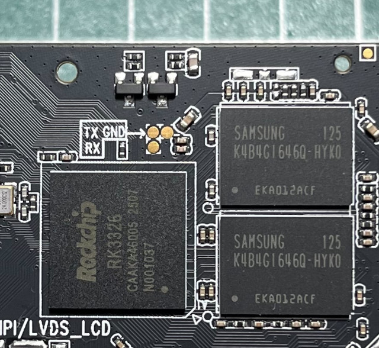
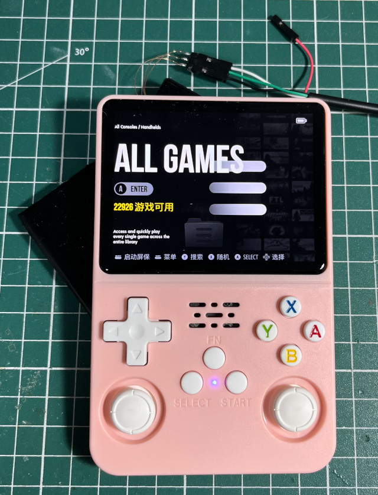

UART位置


DDR Version 1.10 20181114
DDR3
333MHz
BW=32 Col=10 Bk=8 CS0 Row=15 CS=1 Die BW=16 Size=1024MB
OUT
Boot1 Release Time: Jul 18 2018 15:47:49, version: 1.12
chip_id:524b3326_0,0
ChipType = 0x12, 410
mmc2:cmd1,32
emmc reinit
mmc2:cmd1,32
emmc reinit
mmc2:cmd1,32
SdmmcInit=2 1
mmc0:cmd5,32
SdmmcInit=0 0
BootCapSize=0
UserCapSize=55000MB
FwPartOffset=2000 , 0
StorageInit ok = 41388
SecureMode = 0
Secure read PBA: 0x4
Secure read PBA: 0x404
Secure read PBA: 0x804
Secure read PBA: 0xc04
Secure read PBA: 0x1004
SecureInit ret = 0, SecureMode = 0
GPT signature is wrong
LoadTrust Addr:0x4000
No find bl30.bin
Load uboot, ReadLba = 2000
Load OK, addr=0x200000, size=0xfc838
RunBL31 0x10000
NOTICE: BL31: v1.3(debug):1b8f3f9
NOTICE: BL31: Built : 15:17:34, Jul 6 2018
NOTICE: BL31:Rockchip release version: v1.0
INFO: ARM GICv2 driver initialized
INFO: Using opteed sec cpu_context!
INFO: boot cpu mask: 1
INFO: plat_rockchip_pmu_init: pd status f00e
INFO: BL31: Initializing runtime services
INFO: BL31: Initializing BL32
I/TC: console use default uart! console_data.base.pa=0xff160000
I/TC:
I/TC: Start rockchip platform init
I/TC: Rockchip release version: 1.1
I/TC: OP-TEE version: 3.3.0-146-g369430b2 #12 Wed Dec 5 07:40:03 UTC 2018 aarch64
I/TC: Initialized
INFO: BL31: Preparing for EL3 exit to normal world
INFO: Entry point address = 0x200000
INFO: SPSR = 0x3c9
[ 0.106919] genirq: Setting trigger mode 8 for irq 169 failed (0xffffff8008378e20)
[ 0.570057] rk-vcodec vpu_combo: failed on clk_get clk_cabac
[ 0.573800] rk-vcodec vpu_combo: could not find power_model node
[ 0.590335] rockchip-drm display-subsystem: failed to bind ff450000.dsi (ops 0xffffff8008894df8): -517
[ 0.594934] panel-simple-dsi ff450000.dsi.0: failed to get power regulator: -517
[ 0.596125] mali ff400000.gpu: Failed to get regulator
[ 0.596595] mali ff400000.gpu: Power control initialization failed
[ 0.654786] rk817-battery rk817-battery: fb_temperature missing!
[ 0.655337] rk817-battery rk817-battery: energy_mode missing!
[ 0.655868] rk817-battery rk817-battery: zero_reserve_dsoc missing!
[ 0.682735] rk817-charger rk817-charger: power_dc2otg missing!
[ 0.683274] rk817-charger rk817-charger: otg5v_suspend_enable missing!
[ 0.708764] rk_tsadcv2_temp_to_code: Invalid conversion table: code=4095, temperature=2147483647
[ 0.730836] cpu cpu0: failed to find power_model node
[ 0.792655] vccio_sd: Restricting voltage, 3300000-1950000uV
[ 0.793162] vccio_sd: Restricting voltage, 3300000-1950000uV
[ 0.846758] rksfc_base v1.1 2016-01-08
[ 0.855138] vccio_sd: Restricting voltage, 3300000-1950000uV
[ 0.855652] vccio_sd: Restricting voltage, 3300000-1950000uV
[ 0.860887] rockchip-drm display-subsystem: failed to bind ff450000.dsi (ops 0xffffff8008894df8): -517
[ 0.862794] panel-simple-dsi ff450000.dsi.0: using dummy regulator, no backlight_supply
[ 0.864648] mali ff400000.gpu: Failed to get leakage
[ 0.870928] asoc-simple-card rk817-sound: ASoC: no sink widget found for MIC_IN
[ 0.871576] asoc-simple-card rk817-sound: ASoC: Failed to add route Mic Jack -> direct -> MIC_IN
[ 0.872348] asoc-simple-card rk817-sound: ASoC: no source widget found for HPOL
[ 0.872989] asoc-simple-card rk817-sound: ASoC: Failed to add route HPOL -> direct -> Headphone Jack
[ 0.873796] asoc-simple-card rk817-sound: ASoC: no source widget found for HPOR
[ 0.874454] asoc-simple-card rk817-sound: ASoC: Failed to add route HPOR -> direct -> Headphone Jack
[ 0.877964] get_framebuffer_by_node: failed to get logo,offset
[ 0.878534] rockchip-drm display-subsystem: failed to show loader logo
[ 0.965326] vccio_sd: Restricting voltage, 3300000-1950000uV
[ 0.965331] vccio_sd: Restricting voltage, 3300000-1950000uV
[ 0.980326] devfreq ff400000.gpu: Couldn't update frequency transition information.
[ 1.072555] vccio_sd: Restricting voltage, 3300000-1950000uV
[ 1.072561] vccio_sd: Restricting voltage, 3300000-1950000uV
[ 1.176498] vccio_sd: Restricting voltage, 3300000-1950000uV
[ 1.176502] vccio_sd: Restricting voltage, 3300000-1950000uV
[ 1.281164] vccio_sd: Restricting voltage, 3300000-1950000uV
[ 1.281169] vccio_sd: Restricting voltage, 3300000-1950000uV
[ 1.388875] vccio_sd: Restricting voltage, 3300000-1950000uV
[ 1.388880] vccio_sd: Restricting voltage, 3300000-1950000uV
[ 1.496864] vccio_sd: Restricting voltage, 3300000-1950000uV
[ 1.496869] vccio_sd: Restricting voltage, 3300000-1950000uV
[ 1.605163] vccio_sd: Restricting voltage, 3300000-1950000uV
[ 1.605169] vccio_sd: Restricting voltage, 3300000-1950000uV
[ 1.712806] vccio_sd: Restricting voltage, 3300000-1950000uV
[ 1.713322] vccio_sd: Restricting voltage, 3300000-1950000uV
[ 1.816814] vccio_sd: Restricting voltage, 3300000-1950000uV
[ 1.817345] vccio_sd: Restricting voltage, 3300000-1950000uV
[ 1.920948] vccio_sd: Restricting voltage, 3300000-1950000uV
[ 1.921472] vccio_sd: Restricting voltage, 3300000-1950000uV
e2fsck 1.45.3 (14-Jul-2019)
Superblock last write time (Thu Apr 11 16:28:37 2019,
now = Sat Aug 5 09:00:33 2017) is in the future.
Fix? yes
Pass 1: Checking inodes, blocks, and sizes
Pass 2: Checking directory structure
Pass 3: Checking directory connectivity
Pass 4: Checking reference counts
Pass 5: Checking group summary information
root: 162624/434176 files (0.4% non-contiguous), 1595364/1715200 blocks
fsck exited with status code 1
[ 10.363869] cgroup: cgroup2: unknown option "nsdelegate"
[ 11.310849] systemd[1]: systemd-journald.socket: Socket service systemd-journald.service not loaded, refusing.
[ 11.311739] systemd[1]: Failed to listen on Journal Socket.
[FAILED] Failed to listen on Journal Socket.
See 'systemctl status systemd-journald.socket' for details.
Starting Load Kernel Modules...
[ OK ] Listening on initctl Compatibility Named Pipe.
[ 11.340804] systemd[1]: systemd-journald-dev-log.socket: Socket service systemd-journald.service not loaded, refusing.
[ 11.342017] systemd[1]: Failed to listen on Journal Socket (/dev/log).
[FAILED] Failed to listen on Journal Socket (/dev/log).
See 'systemctl status systemd-journald-dev-log.socket' for details.
[ OK ] Created slice system-serial\x2dgetty.slice.
Starting Remount Root and Kernel File Systems...
Starting Set the console keyboard layout...
[ OK ] Created slice system-systemd\x2dfsck.slice.
Starting Create list of re…odes for the current kernel...
[ OK ] Listening on udev Control Socket.
Starting udev Coldplug all Devices...
Mounting Kernel Debug File System...
[ OK ] Started Load Kernel Modules.
[ OK ] Started Create list of req… nodes for the current kernel.
Mounting FUSE Control File System...
Starting Apply Kernel Variables...
Mounting Kernel Configuration File System...
[ OK ] Started Remount Root and Kernel File Systems.
[ OK ] Mounted Kernel Debug File System.
[ OK ] Mounted FUSE Control File System.
[ OK ] Mounted Kernel Configuration File System.
Starting Load/Save Random Seed...
Starting Create System Users...
[ OK ] Started Load/Save Random Seed.
[ OK ] Started Apply Kernel Variables.
[ OK ] Started Create System Users.
Starting Create Static Device Nodes in /dev...
[ OK ] Started Create Static Device Nodes in /dev.
Starting udev Kernel Device Manager...
[ OK ] Started udev Coldplug all Devices.
[ OK ] Started Set the console keyboard layout.
[ OK ] Reached target Local File Systems (Pre).
[ OK ] Started udev Kernel Device Manager.
Starting Show Plymouth Boot Screen...
Ubuntu 19.10 rg351mp ttyFIQ0
rg351mp login: